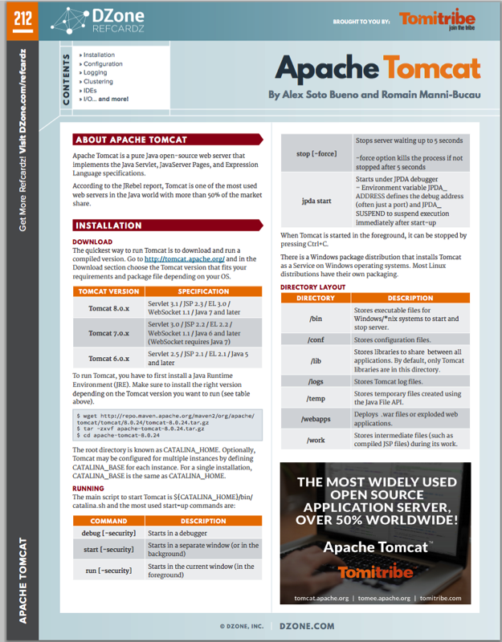

Make your REST services
attack proof

@alexsotob - lordofthejars.com


Don't
— be —
scared
Prepare your Devices
REST API Introduction
What is REST?
- Architecture style
- simpler alternative to SOAP, CORBA, RPC systems
Constraints
- client-server
- stateless
- cacheable on client
- code on demand (optional)
- layered system
- uniform interface
What are RESTful WebServices?
- REST over webservices
- URI for identifying resources
- HTTP methods for operations
- MIME-type for representation
- hypertext links
Examples
GET http://example.com/items/12
POST http://example.com/items
PUT http://example.com/items/12
DELETE http://example.com/items/12
PATCH http://example.com/items/12
Authentication
vs
Authorization
Authentication = Registration Desk
Authorization = Keys of your Room
Java EE
and
Security
XSS attack
“XSS attacks occur when an attacker uses a web application
to send malicious code, generally in the form of a browser side script,
to a different end user.”
— OWASP site —
CSRF attack
“CSRF is an attack that forces an end user to execute unwanted actions on a web application
in which they're currently authenticated.”
<img src="http://bank.com/transfer.do?acct=MARIA&amount=100000" width="0" height="0" border="0">
— OWASP site —
MITM attack
“The man-in-the middle attack intercepts a communication between two systems.
The MITM attack could also be done over an https connection by using the same technique.”
— OWASP site —
HTTP Session and RESTful
HTTP Sessions
- Opaque
- Microservices roundtrip
- Stateful
- No Scalable
A new Hope
TOKENS
JWT
(jot)
JSON Web Token
What is JWT?
- URL safe-token
- HTTP header or URL parameter
- Claims are JSON
- Enable claims digitally signed, MACed or enncrypted

Header
{
"type": "JWT",
"alg": "HS256"
}String header = new String(Base64.encodeBase64URLSafe(headerObject)
Claims
{
"iss": "example.com",
"sub": "alex",
"exp": 1416891754,
"roles": ["ADMIN", "USER"]
}
String claims = new String(Base64.encodeBase64URLSafe(claimObject)
Signature
String signature = sign(algorithm,
join(new String[] {header, claims}, "."),
secret);JWT
String token = header + "." + payload + "." + signature;

Start your Engines
Let's see inside
Fingerprinting tokens
Fingerprinting tokens
- Unique parameters
- One degree of freedom
- Detect stolen tokens
Fingerprinting tokens
- Connection: IP, SSL ID
- Browser: Agent, Accept-Language, Accept, Accept-Encoding
- Javascript: Screen size, OS, TimeZone
Watch your
sensitive data
Encryption
- Use TLS
- Encrypt JWT claims using JWE
- Nested JWT using JWE (signed -> encrypted)
Foolproof
We are
Finishing
Conclusions
- Tokens simplifies RESTful auth
- Easy to implement and test
- OAuth2, SAML, OpenID
- Nimbus JOSE + JWT / JJWT
- Key rotation
- Don't use HTML 5 Web Storage
- F5 survival with server cookies
- Stateful Tokens (oh no)